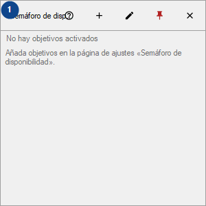
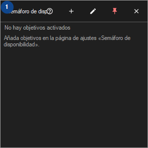

Semáforo de disponibilidad
Para qué sirve
Un panel de mosaicos para sus hosts, sitios, carpetas y unidades; las comprobaciones se hacen mientras CyrFlip está activo y los resultados quedan en memoria.


Orden de uso
Lee las explicaciones numeradas, elige los valores necesarios y continúa con el comando de la ventana.
Elementos
1. Semáforo de disponibilidad
Elige o introduce el valor de la etiqueta contigua. Revísalo antes de continuar.
Tus atajos